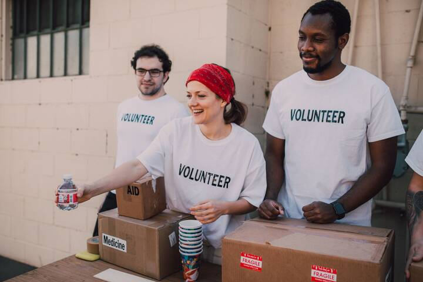

- Home
- Services
- Leadership & Organization
- Culture Transformation
Culture Transformation
Culture transformation consulting that moves beyond values statements to change how people actually behave, by diagnosing current culture with evidence and redesigning the systems, rituals and leadership habits that shape it.
The problem behind the problem.
Culture is often described as the way things are done when no one is watching, and leaders frequently recognize that their current culture does not support their strategy. A company pursuing innovation may have a culture that punishes failure. A health system focused on safety may find staff hesitant to speak up. An organization committed to inclusion may see that only certain voices shape decisions. Leaders sense these gaps but struggle to describe them precisely or to know where to begin.
Many culture initiatives start with new values, launched through events and posters, and fade within months because nothing else changes. Employees notice when stated values conflict with who gets promoted, how budgets are allocated and how leaders respond to bad news. Culture is shaped by systems, incentives, routines and leadership behavior, and it changes only when those change. Organizations need a disciplined approach that treats culture as something that can be measured, designed and managed over time.
How we deliver culture transformation.
- 01Listen
Ethnographic culture diagnostic
We conduct interviews, focus groups and observation across levels and locations, paying attention to stories people tell, behaviors that are rewarded and the unwritten rules that shape decisions. This qualitative work reveals the culture as employees experience it, including subcultures that differ across teams or sites.
- 02Measure
Quantify the culture
We complement qualitative insight with a culture survey, analysis of existing engagement data, and indicators such as promotion patterns, turnover and speak-up rates. This allows leaders to see where culture differs across groups and to track change over time against a clear baseline. Results are compared across sites.
- 03Design
Define target behaviors and levers
With leaders and employee co-design teams, we define a small set of culture shifts in observable, behavioral terms. We then identify the levers that will reinforce those behaviors: leadership routines, decision processes, performance and reward systems, onboarding, rituals and symbols. Every lever has an accountable leader and a clear first step that employees will notice.
- 04Deliver
Change systems and leader behavior
We help leaders model target behaviors visibly, redesign processes and policies that conflict with the desired culture, and support teams in adopting new routines. Culture champions across the organization test changes locally and share what works, so transformation spreads through practice rather than slogans. Early visible changes build credibility.
- 05Sustain
Track and reinforce
We establish a culture dashboard combining survey indicators with behavioral and operational measures. Regular reviews with leadership assess progress, identify where the culture is shifting and where it is stuck, and adjust interventions. Culture transformation is a multi-year effort, and governance keeps it on the agenda.
Deliverables.
What changes.
Who engages us.
Culture transformation clients include chief executives, chief people officers, chief culture officers and boards. We work with companies after a merger or change of ownership, health systems focusing on safety and staff wellbeing, professional services firms facing retention challenges, nonprofits addressing internal equity, and public agencies modernizing services. Triggers often include a new strategy, a crisis or reputational event, poor engagement results, persistent turnover or a leadership transition that opens space for change.
Industries
Beyond the balance sheet.
Culture determines whether people feel safe to speak up, treated fairly and able to do their best work. A healthier culture reduces burnout, harassment and exclusion, and helps organizations retain people who might otherwise leave. Customers notice culture in the quality and consistency of service. In healthcare and public services, cultures that encourage speaking up about risks help protect patients and communities. Culture transformation that is honest and evidence-based creates workplaces that serve both people and performance.
Frequently asked questions.
How do you change organizational culture?
Culture changes when the behaviors leaders model, the systems that reward people and the routines that shape daily work all change together. We start by diagnosing current culture with evidence, define a small number of target shifts in behavioral terms, and then change the levers that reinforce them, such as decision processes, performance management and leadership habits. Progress is measured and reviewed over time.
How long does culture transformation take?
Meaningful culture change usually takes several years, though early shifts can be visible within months when leaders change their own behavior and remove obvious contradictions. We structure transformation in phases, with clear indicators of progress at each stage, so leaders can see whether the effort is working and sustain commitment over the necessary time frame.
Can culture be measured?
Yes, though no single measure captures it fully. We combine culture surveys focused on specific behaviors, analysis of engagement data, operational indicators such as promotion patterns and speak-up rates, and qualitative research. Tracking these over time and across groups gives leaders a reliable picture of where culture is changing and where it is not.
What role does psychological safety play in culture?
Psychological safety, the shared belief that it is safe to take interpersonal risks such as raising concerns or admitting mistakes, is foundational to learning, innovation and quality. Research, including Amy Edmondson's work, has highlighted its importance in teams. We often assess psychological safety as part of a culture diagnostic and help leaders build the behaviors that strengthen it.
Often paired with.
Change Management
Change management that helps employees understand, adopt and sustain new strategies, systems and ways of working, with adoption measured through evidence.
ExploreEmployee Listening & Surveys
Listening programs that combine well-designed surveys, lifecycle pulses, open-text analysis and qualitative methods, connected to action employees can actually see.
ExploreLeadership Consulting
Evidence-based leadership consulting to define what good leadership looks like for your strategy and build it across executives and managers.
ExploreRelated insights.

Psychological Safety at Work
What psychological safety at work really means, why it shapes learning and performance, and the specific leadership behaviors that build or erode it on teams.
Read
Belonging at Work
Belonging is the experience of being accepted and valued for who you are. What it means, how to measure it, and how organizations can design for it.
ReadReady to talk about culture transformation?
Every engagement begins with a conversation. Tell us what you are facing and we will tell you, candidly, how we would approach it.
Start a conversation